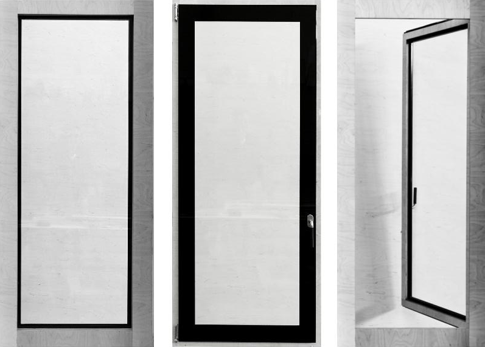

es un sistema de ventanas patentado y certificado, caracterizado por la simplicidad, calidad de construcción
y belleza.
Se han adaptando los últimos avances técnicos para crear un sistema de ventanas de altas prestaciones, diseño sencillo y elegante.
Vidrio y madera trabajan juntos estructuralmente para reducir los perfiles a dimensiones mínimas con un ahorro importante en costes energéticos en su fabricación.
La capacidad de acristalamiento de hasta 45 mm, posibilita la utilización de vidrios energéticamente eficientes y composiciones con grandes espesores, para ofrecer unas excelentes prestaciones acústicas y térmicas según las necesidades de cada proyecto.
- Aperturas:
- Oscilobatiente y corredera.
- Materiales:
- Madera contrachapada de abedul y adhesivos fenólicos, con acabado al aceite, lacados o barnices.
- Vidrios con cámara de diferentes espesores.
- Herrajes de alta gama.